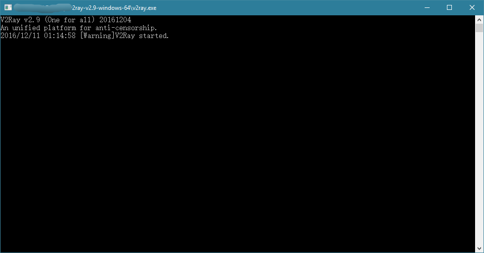

安装
本节将说明如何安装 V2Ray，内容包含服务器安装和客户端安装。需要注意的是，与 Shadowsocks 不同，从软件上 V2Ray 不区分服务器版和客户端版
也就是说在服务器和客户端运行的 V2Ray 是同一个软件，区别只是配置文件的不同。因此 V2Ray 的安装在服务器和客户端上是一样的 通常情况下 VPS 使用的是 Linux 而 PC 使用的是 Windows，因此本章默认服务器为 Linux VPS，客户端为 Windows PC 如果你的 PC 使用的是 Linux 操作系统，那么请参考本文的服务器安装；VPS 使用的是 Windows，参考本文的客户端安装；
服务器安装
在 Linux 操作系统， V2Ray 的安装有 脚本 安装、 手动 安装、 编译 安装 3 种方式，选择其中一种即可
本指南仅提供使用使用脚本安装的方法，并仅推荐使用脚本安装，该脚本由 V2Ray 官方提供 该脚本仅可以在 Debian 系列或者支持 Systemd 的 Linux 操作系统使用 默认使用 Debian 10 系统作为示范
安装依赖软件
首先安装脚本的依赖软件：
$ apt update $ apt install curl
下载安装脚本
$ curl -O https://raw.githubusercontent.com/v2fly/fhs-install-v2ray/master/install-release.sh % Total % Received % Xferd Average Speed Time Time Time Current Dload Upload Total Spent Left Speed 0 0 0 0 0 0 0 0 --:--:-- --:--:-- --:--:-- 0 0 0 0 0 0 0 0 0 --:--:-- 0:00:01 --:--:-- 0 100 21613 100 21613 0 0 8732 0 0:00:02 0:00:02 --:--:-- 8736
执行安装
$ bash install-release.sh
Downloading V2Ray archive: https://github.com/v2fly/v2ray-core/releases/download/v4.27.0/v2ray-linux-64.zip
% Total % Received % Xferd Average Speed Time Time Time Current
Dload Upload Total Spent Left Speed
0 0 0 0 0 0 0 0 --:--:-- --:--:-- --:--:-- 0
0 0 0 0 0 0 0 0 --:--:-- --:--:-- --:--:-- 0
100 631 100 631 0 0 331 0 0:00:01 0:00:01 --:--:-- 331
0 0 0 0 0 0 0 0 --:--:-- 0:00:02 --:--:-- 0
100 12.2M 100 12.2M 0 0 841k 0 0:00:14 0:00:14 --:--:-- 1899k
Downloading verification file for V2Ray archive: https://github.com/v2fly/v2ray-core/releases/download/v4.27.0/v2ray-linux-64.zip.dgst
% Total % Received % Xferd Average Speed Time Time Time Current
Dload Upload Total Spent Left Speed
0 0 0 0 0 0 0 0 --:--:-- --:--:-- --:--:-- 0
0 0 0 0 0 0 0 0 --:--:-- --:--:-- --:--:-- 0
100 636 100 636 0 0 294 0 0:00:02 0:00:02 --:--:-- 295
0 0 0 0 0 0 0 0 --:--:-- 0:00:02 --:--:-- 0
100 590 100 590 0 0 133 0 0:00:04 0:00:04 --:--:-- 282
Reading package lists... Done
Building dependency tree
Reading state information... Done
Suggested packages:
zip
The following NEW packages will be installed:
unzip
0 upgraded, 1 newly installed, 0 to remove and 0 not upgraded.
Need to get 172 kB of archives.
After this operation, 580 kB of additional disk space will be used.
Get:1 http://mirrors.163.com/debian buster/main amd64 unzip amd64 6.0-23+deb10u1 [172 kB]
Fetched 172 kB in 1s (173 kB/s)
Selecting previously unselected package unzip.
(Reading database ... 31383 files and directories currently installed.)
Preparing to unpack .../unzip_6.0-23+deb10u1_amd64.deb ...
Unpacking unzip (6.0-23+deb10u1) ...
Setting up unzip (6.0-23+deb10u1) ...
Processing triggers for mime-support (3.62) ...
Processing triggers for man-db (2.8.5-2) ...
info: unzip is installed.
info: Extract the V2Ray package to /tmp/tmp.vk9AF2EqKA/ and prepare it for installation.
installed: /usr/local/bin/v2ray
installed: /usr/local/bin/v2ctl
installed: /usr/local/share/v2ray/geoip.dat
installed: /usr/local/share/v2ray/geosite.dat
installed: /usr/local/etc/v2ray/00_log.json
installed: /usr/local/etc/v2ray/01_api.json
installed: /usr/local/etc/v2ray/02_dns.json
installed: /usr/local/etc/v2ray/03_routing.json
installed: /usr/local/etc/v2ray/04_policy.json
installed: /usr/local/etc/v2ray/05_inbounds.json
installed: /usr/local/etc/v2ray/06_outbounds.json
installed: /usr/local/etc/v2ray/07_transport.json
installed: /usr/local/etc/v2ray/08_stats.json
installed: /usr/local/etc/v2ray/09_reverse.json
installed: /var/log/v2ray/
installed: /var/log/v2ray/access.log
installed: /var/log/v2ray/error.log
installed: /etc/systemd/system/v2ray.service
installed: /etc/systemd/system/v2ray@.service
removed: /tmp/tmp.vk9AF2EqKA/
info: V2Ray v4.27.0 is installed.
You may need to execute a command to remove dependent software: apt remove curl unzip
Please execute the command: systemctl enable v2ray; systemctl start v2ray
运行
安装完之后，使用以下命令启动 V2Ray:
$ systemctl start v2ray
设置开机自启动 V2Ray:
$ systemctl enable v2ray
接下来看看 V2ray 是不是真的运行起来了:
$ systemctl status v2ray
● v2ray.service - V2Ray Service
Loaded: loaded (/etc/systemd/system/v2ray.service; disabled; vendor preset: enabled)
Active: active (running) since Sun 2020-08-16 23:17:13 CST; 41min ago
Main PID: 1984 (v2ray)
Tasks: 6 (limit: 2359)
Memory: 6.9M
CGroup: /system.slice/v2ray.service
└─1984 /usr/local/bin/v2ray -confdir /usr/local/etc/v2ray/
Aug 16 23:17:13 debian v2ray[1984]: v2ctl> Read config: /usr/local/etc/v2ray/01_api.json
Aug 16 23:17:13 debian v2ray[1984]: v2ctl> Read config: /usr/local/etc/v2ray/02_dns.json
Aug 16 23:17:13 debian v2ray[1984]: v2ctl> Read config: /usr/local/etc/v2ray/03_routing.json
Aug 16 23:17:13 debian v2ray[1984]: v2ctl> Read config: /usr/local/etc/v2ray/04_policy.json
Aug 16 23:17:13 debian v2ray[1984]: v2ctl> Read config: /usr/local/etc/v2ray/05_inbounds.json
Aug 16 23:17:13 debian v2ray[1984]: v2ctl> Read config: /usr/local/etc/v2ray/06_outbounds.json
Aug 16 23:17:13 debian v2ray[1984]: v2ctl> Read config: /usr/local/etc/v2ray/07_transport.json
Aug 16 23:17:13 debian v2ray[1984]: v2ctl> Read config: /usr/local/etc/v2ray/08_stats.json
Aug 16 23:17:13 debian v2ray[1984]: v2ctl> Read config: /usr/local/etc/v2ray/09_reverse.json
Aug 16 23:17:13 debian v2ray[1984]: 2020/08/16 23:17:13 [Warning] v2ray.com/core: V2Ray 4.27.0 start
lines 1-19/19 (END)
但是由于此时还没有为 V2ray 配置，所以还是把它关掉吧：
$ systemctl stop v2ray
升级更新
在 VPS，重新执行一遍安装脚本就可以更新了，在更新过程中会自动重启 V2Ray，配置文件保持不变
$ bash install-release.sh
V2Ray 的更新策略是快速迭代，每周更新(无意外的情况下)。版本号的格式是 vX.Y.Z，如 v2.44.0。v 是固定的字母 v，version 的首字母；X、Y、Z 都是数字，X 是大版本号，每年更新一个大版本(现在是 v4.Y.Z，V2Ray 已经走到了第四个年头)，Y 是小版本，每周五更新一个小版本。Z 是区分正式版和测试版，Z 是 0 代表着是正式版，不是 0 说明是测试版
例如，v4.7.0 是正式版，v4.7.1 是测试版，建议只使用正式版，不手动指定的情况下 V2Ray 的安装脚本也只会安装最新的正式版
客户端安装
下载 V2Ray 的 Windows 压缩包：
- 如果是 32 位系统，下载 v2ray-windows-32.zip
- 如果是 64 位系统，下载 v2ray-windows-64.zip（下载速度慢或无法下载请考虑挂已有的翻墙软件来下载）
下载并且解压之后会有下面这些文件：
- v2ray.exe: 运行 V2Ray 的程序文件
wv2ray.exe: 同 v2ray.exe
区别在于 wv2ray.exe 是后台运行的，不像 v2ray.exe 会有类似于 cmd 控制台的窗口 运行 V2Ray 时从 v2ray.exe 和 wv2ray.exe 中任选一个即可
- config.json: V2Ray 的配置文件，后面对 V2Ray 进行配置其实就是修改这个文件
- v2ctl.exe: V2Ray 的工具，有多种功能，除特殊用途外，一般由 v2ray.exe 来调用，用户不用太关心
- geosite.dat: 用于路由的域名文件
- geoip.dat: 用于路由的 IP 文件
其它 除上面的提到文件外，其他的不是运行 V2Ray 的必要文件 更详细的说明可以看 doc 文件夹下的 readme.md 文件，可以通过记事本或其它的文本编辑器打开查看
实际上双击 v2ray.exe （或 wv2ray.exe） 就可以运行 V2Ray 了，V2Ray 会读取 config.json 中的配置与服务器连接：

| Previous: 准备 | Home: 开始 |